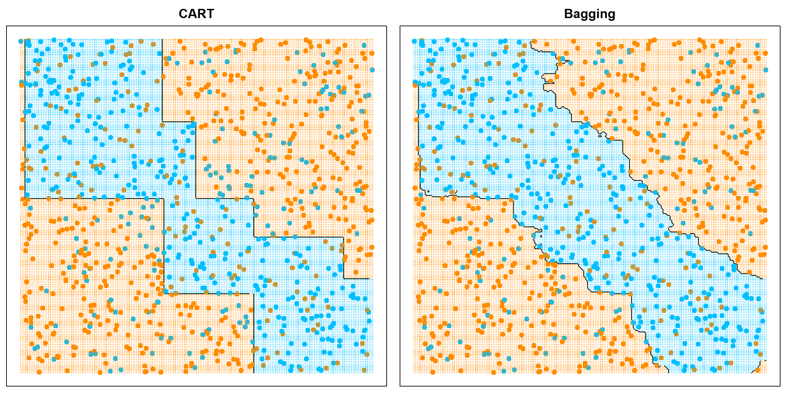
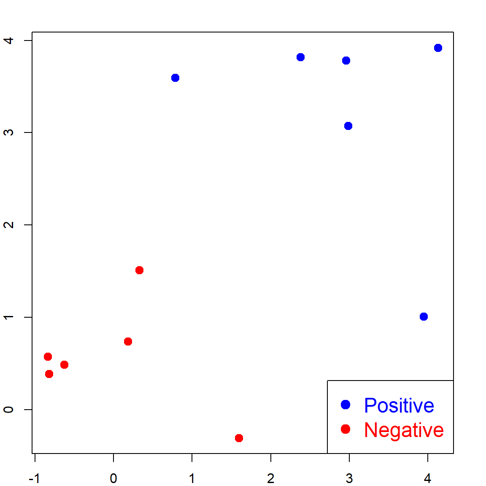
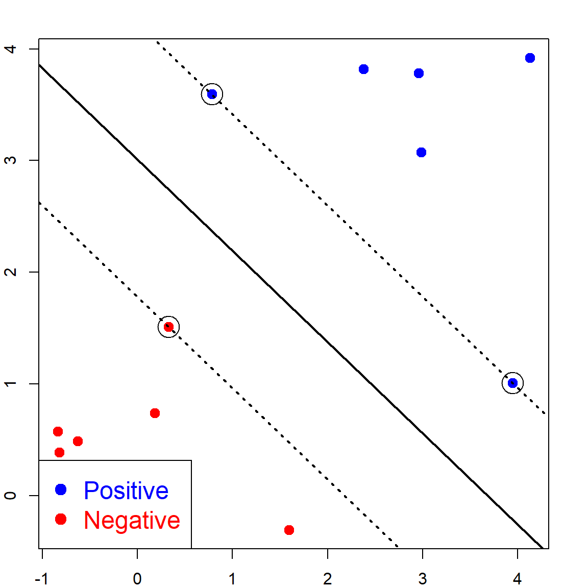

Chapter 15 Random Forests
Roughly speaking, random forests (Breiman 2001) are parallelly fitted CART models with some randomness. There are several main components:
- Bootstrapping of data for each tree using the Bagging idea (Breiman 1996), and use the averaged result (for regression) or majority voting (for classification) of all trees as the prediction.
- At each internal node, we may not consider all variables. Instead, we consider a randomly selected
mtryvariables to search for the best split. This idea was inspired by by Ho (1998). - For each tree, we will not perform pruning. Instead, we simply stop when the internal node contains no more than
nodesizenumber of observations.
Later on, there were various version of random forests that attempts to improve the performance, from both computational and theoretical prospective. We will introduce them later.
15.1 Bagging Predictors
CART models may be difficult when dealing with non-axis-aligned decision boundaries. This can be seen from the example below, in a two-dimensional case. The idea of Bagging is that we can fit many CART models, each from a Bootstrap sample, i.e., sample with replacement from the original \(n\) observations. The reason that Breiman considered bootstrap samples is because it can approximate the original distribution that generates the data. But the end result is that since each tree may be slightly different from each other, when we stack them, the decision bound can be more “smooth.”
# generate some data
set.seed(2)
n = 1000
x1 = runif(n, -1, 1)
x2 = runif(n, -1, 1)
y = rbinom(n, size = 1, prob = ifelse((x1 + x2 > -0.5) & (x1 + x2 < 0.5) , 0.8, 0.2))
xgrid = expand.grid(x1 = seq(-1, 1, 0.01), x2 = seq(-1, 1, 0.01))Let’s compare the decision rule of CART and Bagging. For CART, the decision line has to be aligned to axis. For Bagging, we use a total of 200 trees, specified by nbagg in the ipred package.
# fit CART
library(rpart)
rpart.fit = rpart(as.factor(y)~x1+x2, data = data.frame(x1, x2, y))
# we could fit a different tree using a bootstrap sample
# rpart.fit = rpart(as.factor(y)~x1+x2, data = data.frame(x1, x2, y)[sample(1:n, n, replace = TRUE), ])
pred = matrix(predict(rpart.fit, xgrid, type = "class") == 1, 201, 201)
contour(seq(-1, 1, 0.01), seq(-1, 1, 0.01), pred, levels=0.5, labels="",axes=FALSE)
points(x1, x2, col = ifelse(y == 1, "deepskyblue", "darkorange"), pch = 19, yaxt="n", xaxt = "n")
points(xgrid, pch=".", cex=1.2, col=ifelse(pred, "deepskyblue", "darkorange"))
box()
title("CART")
# fit Bagging
library(ipred)
## Warning: package 'ipred' was built under R version 4.1.2
bag.fit = bagging(as.factor(y)~x1+x2, data = data.frame(x1, x2, y), nbagg = 200, ns = 400)
pred = matrix(predict(prune(bag.fit), xgrid) == 1, 201, 201)
contour(seq(-1, 1, 0.01), seq(-1, 1, 0.01), pred, levels=0.5, labels="",axes=FALSE)
points(x1, x2, col = ifelse(y == 1, "deepskyblue", "darkorange"), pch = 19, yaxt="n", xaxt = "n")
points(xgrid, pch=".", cex=1.2, col=ifelse(pred, "deepskyblue", "darkorange"))
box()
title("Bagging")
15.2 Random Forests
Random forests are equipped with this Bootstrapping strategy, but also with other things, which are mentioned previously. They are controlled by several key parameters:
ntree: number of treessampsize: how many samples to use when fitting each treemtry: number of randomly sampled variable to consider at each internal nodenodesize: stop splitting when the node sample size is no larger thannodesize
Using the randomForest package, we can fit the model. It is difficult to visualize this when p > 2. But we can look at the testing error.
# generate some data with larger p
set.seed(2)
n = 1000
p = 10
X = matrix(runif(n*p, -1, 1), n, p)
x1 = X[, 1]
x2 = X[, 2]
y = rbinom(n, size = 1, prob = ifelse((x1 + x2 > -0.5) & (x1 + x2 < 0.5), 0.8, 0.2))
xgrid = expand.grid(x1 = seq(-1, 1, 0.01), x2 = seq(-1, 1, 0.01))
# fit random forests with a selected tuning
library(randomForest)
## randomForest 4.6-14
## Type rfNews() to see new features/changes/bug fixes.
##
## Attaching package: 'randomForest'
## The following object is masked from 'package:ggplot2':
##
## margin
rf.fit = randomForest(X, as.factor(y), ntree = 1000,
mtry = 7, nodesize = 10, sampsize = 800)Instead of generating a set of testing samples labels, let’s directly compare with the “true” decision rule, the Bayes rule.
# the testing data
Xtest = matrix(runif(n*p, -1, 1), n, p)
# the Bayes rule
BayesRule = ifelse((Xtest[, 1] + Xtest[, 2] > -0.5) &
(Xtest[, 1] + Xtest[, 2] < 0.5), 1, 0)
mean( (predict(rf.fit, Xtest) == "1") == BayesRule )
## [1] 0.78515.3 Effect of mtry
In the two dimensional setting, we probably won’t see much difference by using random forests, since the only effective change is mtry = 1, which is not really different than mtry = 2 (the CART choice). You can try this by yourself.
However, the difference would be significant in higher dimensional settings, in our case \(p=10\). This is again an issue of bias-variance trade-off. The intuition is that, when we use a small mtry, and when \(p\) is large, we may by chance randomly select some irrelevant variables that has nothing to do with the outcome. Then this particular split would be wasted. Missing the true variable may cause larger bias. On the other hand, when we use a large mtry, we will be greedy for signals since we compare many different variables and pick the best one. But this is also as the risk of over-fitting. Hence, tuning is necessary.
Just as an example, let’s try a small mtry:
rf.fit = randomForest(X, as.factor(y), ntree = 1000,
mtry = 1, nodesize = 10, sampsize = 800)
mean( (predict(rf.fit, Xtest) == "1") == BayesRule )
## [1] 0.63415.4 Effect of nodesize
When we use a small nodesize, we are at the risk of over-fitting. This is similar to the 1NN example. When we use large nodesize, there could be under-fitting.
15.5 Variable Importance
Random forests model provides a way to evaluate the importance of each variable. This can be done by specifying the importance argument. We usually use the MeanDecreaseAccuracy or MeanDecreaseGini column as the summary of the importance of each variable.
rf.fit = randomForest(X, as.factor(y), ntree = 1000,
mtry = 7, nodesize = 10, sampsize = 800,
importance=TRUE)
importance(rf.fit)
## 0 1 MeanDecreaseAccuracy MeanDecreaseGini
## 1 39.1053057 39.823786 45.4232897 47.79065
## 2 38.1820764 40.119387 45.1964485 54.89580
## 3 3.2719270 1.461298 3.2274895 28.44828
## 4 -0.2777943 -6.287430 -4.8470758 22.09006
## 5 2.0937973 1.654224 2.5256400 28.57575
## 6 2.2354984 -2.435663 -0.1297796 25.29836
## 7 0.2083020 2.724449 2.0679184 24.28751
## 8 0.2018946 3.350897 2.3962745 25.51630
## 9 -1.6159803 2.150674 0.3912234 23.41498
## 10 2.6081961 4.417256 4.8004480 27.8039915.6 Kernel view of Random Forets
I wrote a small function that will extract the kernel weights from a random forests for predicting a testing point \(x\). This is essentially the counts for how many times a training data falls into the same terminal node as \(x\). Since the prediction on \(x\) are essentially the average of them in a weighted fashion, this is basically a kernel averaging approach. However, the kernel weights are adaptive to the true structure.
# generate the 2 dimensional case
set.seed(2)
n = 1000
x1 = runif(n, -1, 1)
x2 = runif(n, -1, 1)
y = rbinom(n, size = 1, prob = ifelse((x1 + x2 > -0.5) & (x1 + x2 < 0.5) , 0.8, 0.2))
xgrid = expand.grid(x1 = seq(-1, 1, 0.01), x2 = seq(-1, 1, 0.01))
# fit a random forest model
rf.fit = randomForest(cbind(x1, x2), as.factor(y), ntree = 300,
mtry = 1, nodesize = 20, keep.inbag = TRUE)
pred = matrix(predict(rf.fit, xgrid) == 1, 201, 201)
par(mfrow=c(1,2), mar=c(0.5, 0.5, 2, 0.5))
# check the kernel weight at different points
plotRFKernel(rf.fit, data.frame(cbind(x1, x2)), c(-0.1, 0.4))
plotRFKernel(rf.fit, data.frame(cbind(x1, x2)), c(0, 0.6))
As contrast, here is the regular Gaussian kernel weights (after some tuning). This effect will play an important role when \(p\) is large.
# Gaussian kernel weights
onex = c(-0.1, 0.4)
h = 0.2
wt = exp(-0.5*rowSums(sweep(cbind(x1, x2), 2, onex, FUN = "-")^2)/h^2)
contour(seq(-1, 1, 0.01), seq(-1, 1, 0.01), pred,
levels=0.5, labels="",axes=FALSE)
points(x1, x2, cex = 4*wt^(2/3), pch = 1, cex.axis=1.25, lwd = 2)
points(x1, x2, col = ifelse(y == 1, "deepskyblue", "darkorange"),
pch = 19, cex = 0.75, yaxt="n", xaxt = "n")
points(xgrid, pch=".", cex=1.2,
col=ifelse(pred, "deepskyblue", "darkorange"))
points(onex[1], onex[2], pch = 4, col = "red", cex =4, lwd = 6)
box()